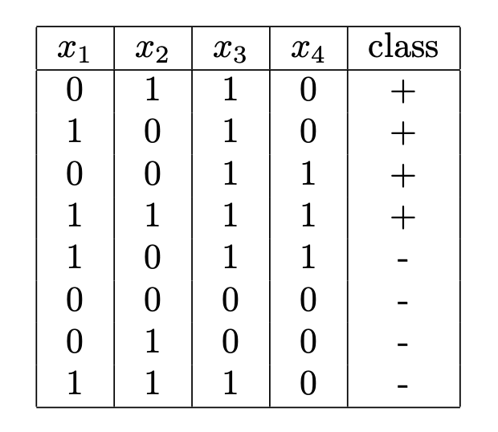

Due at the start of class on Wednesday March 2nd
(1) Consider the following decision tree:
Draw the decision boundaries defined by this tree. Each leaf is labeled with a letter. Write this letter in the corresponding region of the instance space.
Give another decision tree that is syntactically different but defines the same decision boundaries. Your answer must be in the form of a decision tree. This demonstrates that the space of decision trees is syntactically redundant.
(2) Consider the following dataset with four binary attributes and one binary class label.

Use equation 3.4 from the Mitchell chapter on decision trees to compute information gain for each attribute to choose the root split for the tree. Give the computed information gain for each attribute and indicate which attribute should be used at the root of the tree.
Draw the full, unpruned tree that would be learned from this dataset. There is no need to do the full information gain computation for the splits below the root. Just “eyeball” the data and the correct splits should be obvious.
(3) Suppose you want to train a perceptron on the following dataset:
| X1 | X2 | Y |
| 2 | 6 | -1 |
| 1 | 3 | 1 |
| 3 | 9 | 1 |
Give a brief intuitive explanation for why the perceptron cannot learn this task. Then give a proof using inequalities expressed in terms of the weights W1, W2, and b. Recall that y*a must be > 0 for the perceptron to classify an instance correctly. You should show that this condition cannot be satisfied simultaneously for all 3 instances above for any W1, W2, and b.
Imagine that we modify the perceptron algorithm given in the book so that it always updates the weights. That is, we don't first check to see if y*a ≤ 0 before doing a weight update. Is the resulting algorithm still correct? That is, will it still be able to classify linearly separable data perfectly? Why or why not? Will the weights eventually converge and cease to change? Why or why not? If they don't converge, characterize what happens to them as the number of iterations grows large.